About the race
Bergman is a triathlon series organised by Deccan Sports Club, one of the best Indian triathlon organisers. It runs in different cities, and the races come in a few distances. At Ozar there were two:
- Olympic distance: 1.5 km swim, 40 km bike, 10 km run. Cut-offs: swim 1:05, bike finish 3:15 (cumulative), overall 5:00.
- Bergman 102: 2 km swim, 80 km bike, 20 km run. Cut-offs: swim 1:15, bike finish 5:15 (cumulative), overall 8:00.
The series has been held in places like Pune (Ozar), Kolhapur, Mysore and Bangalore.
This edition was in Ozar, near Pune, on 4 October 2026, and I did the Olympic distance, my first triathlon at that distance.
The course in a few lines: where the swim was, how many bike loops, how hilly, what the run looked like.
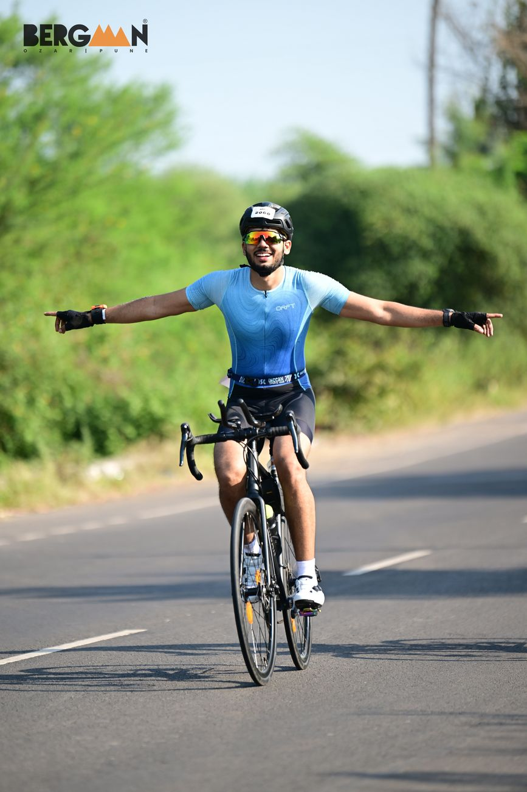
Why this race and not Ironman Goa?
Since this was my first triathlon, I did not want to start with a full half-Ironman like Ironman Goa. I wanted the Olympic distance, and I wanted a race that was a little cheaper and close to where I live.
Bergman Ozar ticked the boxes that mattered to me:
- The distance: Olympic, a sensible first step.
- The cost: a little cheaper than Ironman Goa.
- Close to home: less travelling and easier logistics for me and the bike.
- The organisers: Deccan Sports Club has been running triathlons for some time, which matters a lot for a first triathlon.
Weighing all of that together, cost, transport, logistics and the quality of the organisation, this was the right race for me.
Preparation
It all started around March, six or seven months before the race. I had been running for about eight months by then, and that was when I decided to do a triathlon.
I bought my road bike in March. Swimming was a different story. I knew how to swim, but only for fun: a pool with friends, or a villa trip. I had never swum competitively or over any distance. So, also in March, I started learning to swim properly, for long distances.
Fitting all of this around a 9-to-5 job was hectic. I had to plan every week, cancel other plans, and give up most of my social life. The body that stood on the start line was also built over 36 weeks from 26 January 2026; the numbers and photos are on the Route.
A typical week looked like this:
- Strength: 3 days at home, push, pull and legs.
- Running: 3 to 4 runs, one long run and 2 to 3 easy ones.
- Swimming: 2 to 3 sessions, whenever I could get to a pool.
- Cycling: 2 rides.
1. Training
The goal was not to chase a time. It was to build my engine and finish the triathlon, so I could find out where I stand and only then start proper preparation. So I trained for distance, not speed.
I did not have a coach. I took help from AI to plan my training, and I taught myself the rest, swimming included. For an Olympic-distance first triathlon, that was enough.
Swimming
I swam two or three times a week, depending on how much time I could find. The monsoon made it harder: a lot of the swimming pools around me were closed for about two months, so I did not get as much swimming in as I wanted.
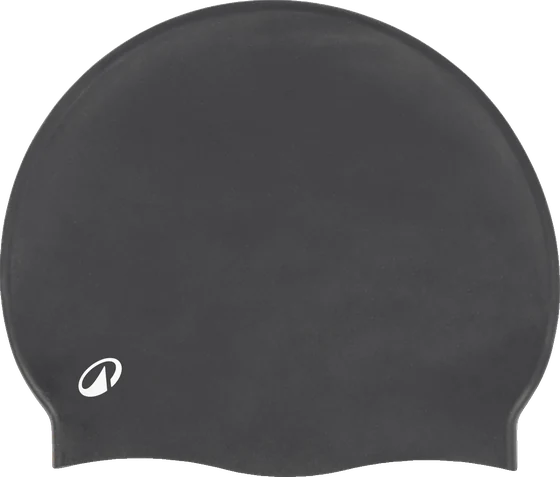
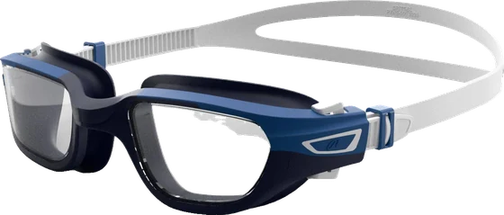
How the long-distance swimming came along, and the first time in open water.
Cycling
I rode twice a week, and just for distance: no interval or speed sessions. In the monsoon the roads were risky, so I bought an indoor trainer and did those rides at home.
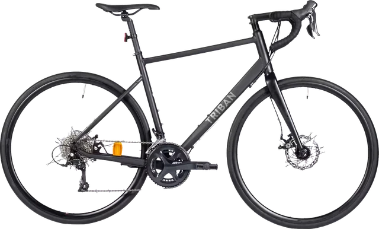
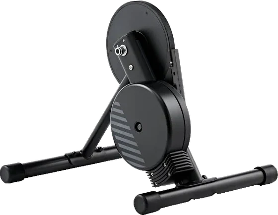
The Triban, what the rides looked like, the longest ride before race day.
Running
I ran three or four times a week and kept it simple. I did not do any tempo runs or intervals, only distance: one long run and two or three easy ones. The long run was 10 to 12 km, and the easy runs were anywhere from 5 to 8 km.
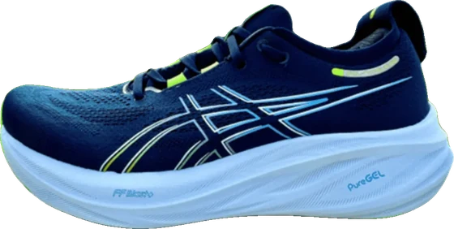
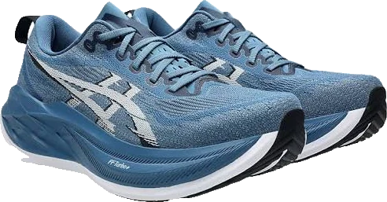
Strength
I cut strength training down to three days a week, a push, pull and legs split with just three or four exercises each. I trained at home with a pull-up bar, dumbbells and a bench.
When work got in the way
Work also took me to Delhi for three weeks, and that hampered my preparation too. All in all, the preparation came down to planning, and to sacrificing the things I would normally have done.
The day before
Packing
I started the day before with packing. A triathlon means carrying a lot of stuff: gear for three sports, plus food and everything else. The venue was away from home, so I could not afford to forget anything. There would be no going back to pick up what I had left behind.
So I began by making a list and splitting it into categories: swimming, cycling, running and nutrition. Then I packed one category at a time, starting with swimming. This is the whole list:
Swim
Cap · Goggles · Swimming pants · Tow float · 2 towels (small and big) · Vaseline · Tri suit · Flip flops
Cycling
Bike · Helmet · Sunglasses · Bandana · Socks · Cycling shoes · Cycling shorts (for the shakeout) · 2 bike bottles · Extra bottle cage · 2 spare tubes · Pump · Gloves · Tyre lever · Multi tool · Bike lock
Running
Cap · Shoes · Socks · Watch
Nutrition
Gels · Electrolytes · Sports drinks · Energy bars · Fruits · Pre-race breakfast
I did not want to leave anything for the last moment, so I packed everything, from the energy drinks and energy bars to all the nutrition. I stuffed in all of it.
Download the packing checklist (PDF)Travelling
I took the wheels off the bicycle and loaded the bike and everything else into the car, and then I left for the venue. I do not have a car of my own, so I rented one.
If you are travelling from Mumbai, it takes about 3.5 to 4 hours to reach the venue. From Pune, it takes about 2 hours 30 minutes to 2 hours 45 minutes on average.
The journey was good.
For me, I stayed at a friend's house in Pune the night before, left around 10 in the morning, and reached the venue around 12:30.
My advice: get there a day before bib collection, which is two days before the race (T minus 2). That gives you time to rest properly, go for a swim, and go over the course route so nothing about it is new on race day.
The hotel: where you stayed near the venue.
Bib collection
When I arrived, instead of going to the hotel first, I went straight to collect my bib. The queue was very long and I had to wait a bit, but I got my bib and the goodies.
I was also given a wristband that gave me access to everything event-related, like the transition area. In the kit I got my bib, a few other stickers, a T-shirt, a hoodie, a bag, a race belt, and the transition bags, which have to be kept in the transition area.
Bike check-in
After collecting all of that, I took my bike out of the car and put it back together. The chain had come off, but luckily Bergman had a maintenance area at the venue, so I handed my bike over there. They quickly checked the screws, nuts, chain, brakes, shifting, everything, and they did a really good job.
Then I put the stickers on my helmet and my bike and submitted the bike in the transition area. You have to submit your bike one day before the race. Other things, like your gels, a tyre air check and your shoes, can be done on race morning, when the transition area opens again for about 30 to 40 minutes. That is when you can leave your gels, food and bottles with electrolytes.
Trial swim
After that, I went to the hotel, freshened up and came back. I also got into the open water, the lake, just to see how it felt.
Honestly, I have very little experience, and I was out of breath within the first 300 metres. When I came out, I changed my plan for race day. Instead of swimming freestyle, I decided to swim breaststroke the whole way, because my goal was simply to finish the swim before the cut-off.
Transition bags
How you set up the transition bags for race day.
Fuelling and hydration
What you ate and drank the day before, and how you planned race-day fuelling and hydration.
The experience on race day
How race day felt as a whole: waking up, the start line, the mood, the crowd, what surprised you, the finish, and how you felt afterwards.
Race day breakdown
1. Swim
The start, the crowd, how open water felt, finding your rhythm, exit time. Strava activity link.
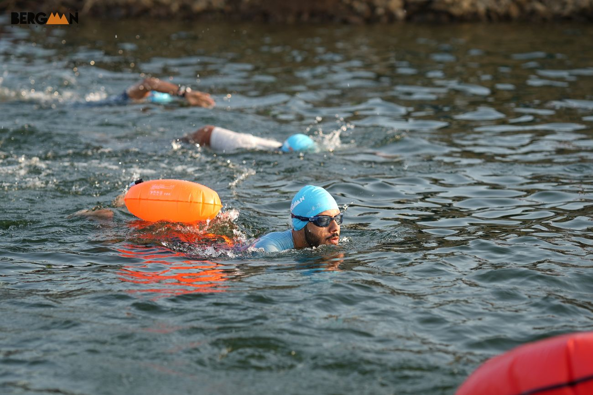
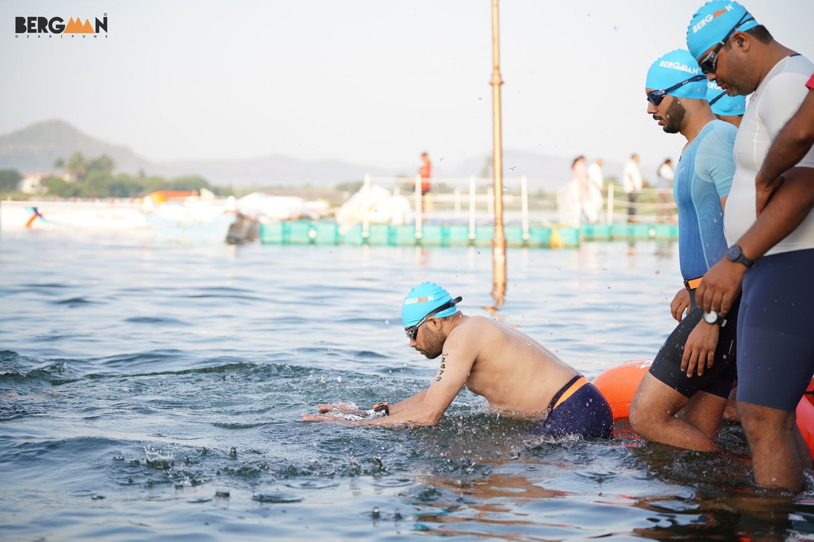
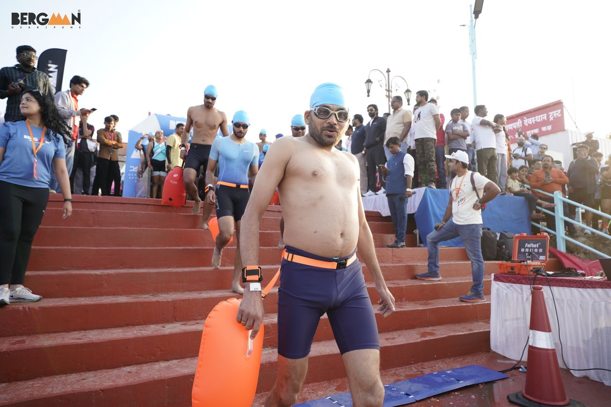
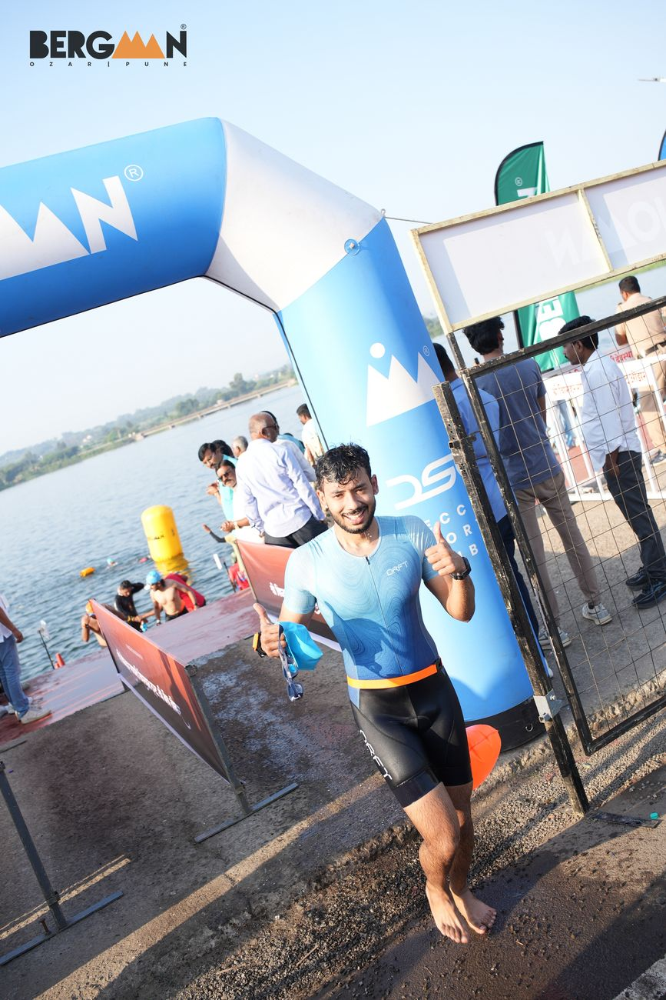
2. T1
What was in the bag, how long it took, anything forgotten.
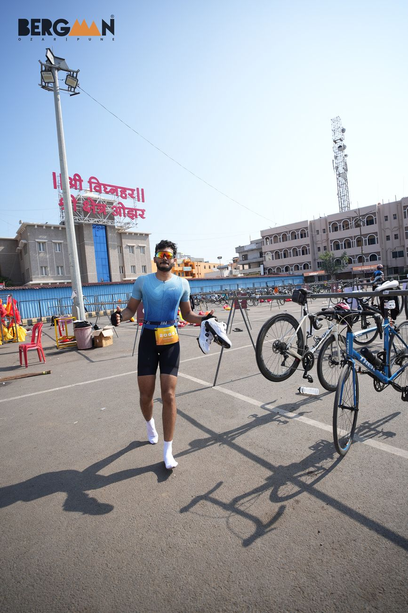
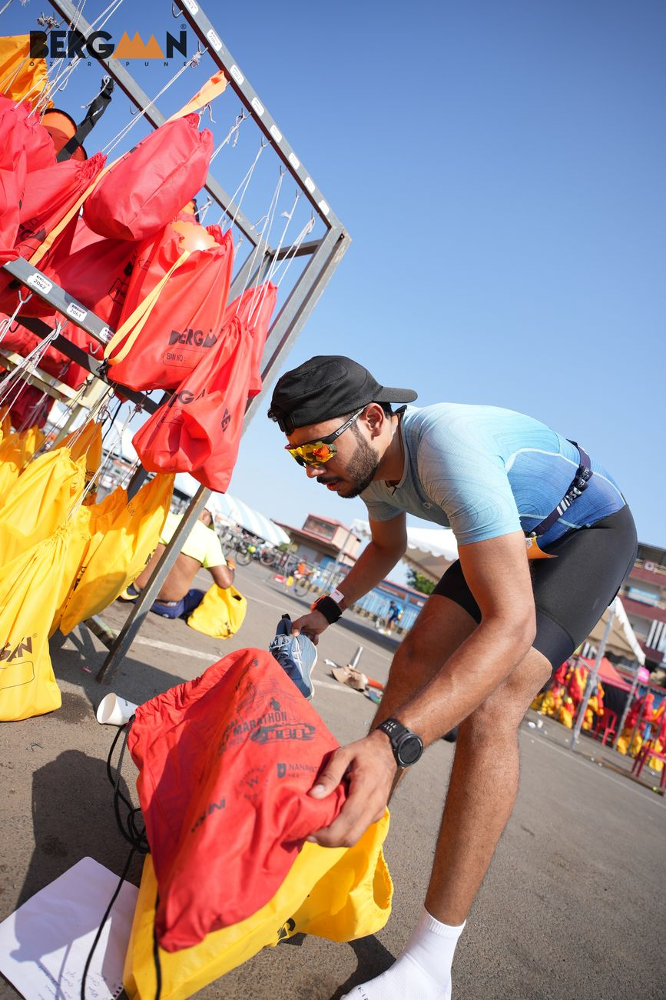
3. Cycling
The loops, the road, the heat and wind, nutrition on the bike, speed, any drama. Strava activity link.
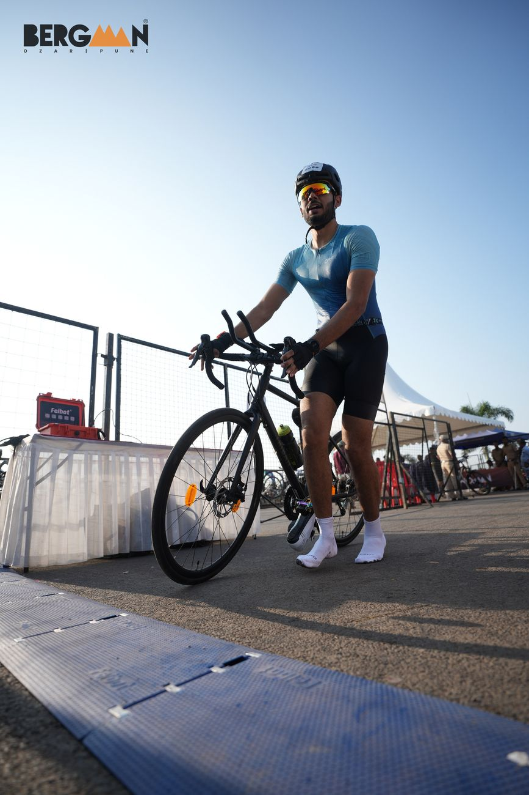
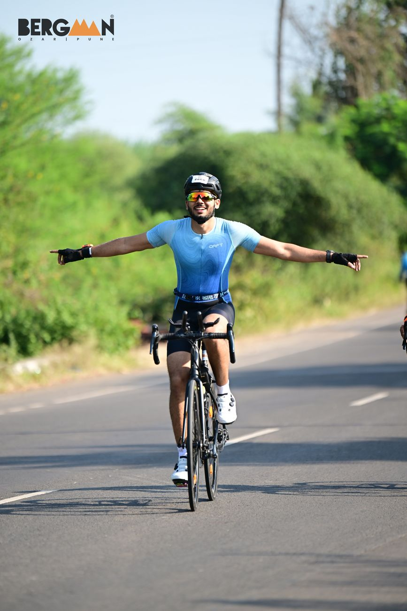
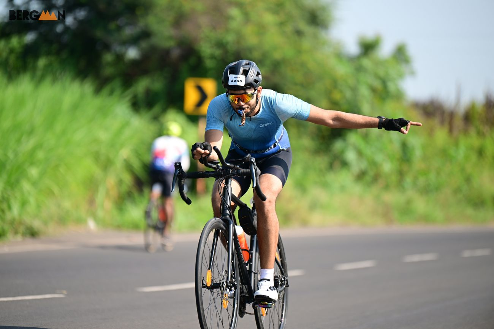
4. T2
Shoes, the first steps off the bike, how the legs felt.
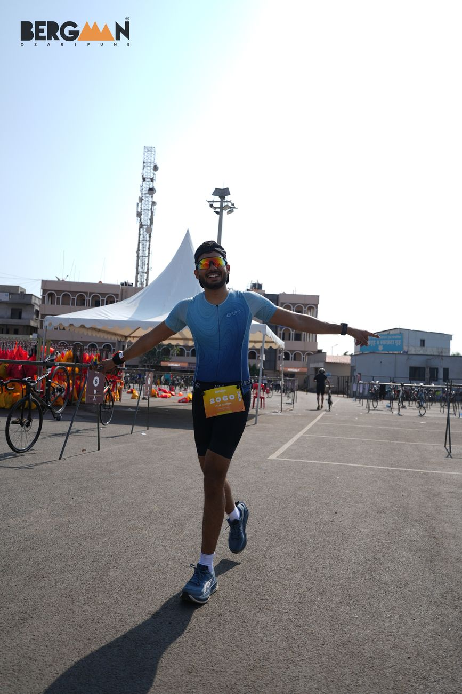
5. Running
The first kilometre off the bike, the heat, the aid stations, the hardest stretch, the finish. Strava activity link.
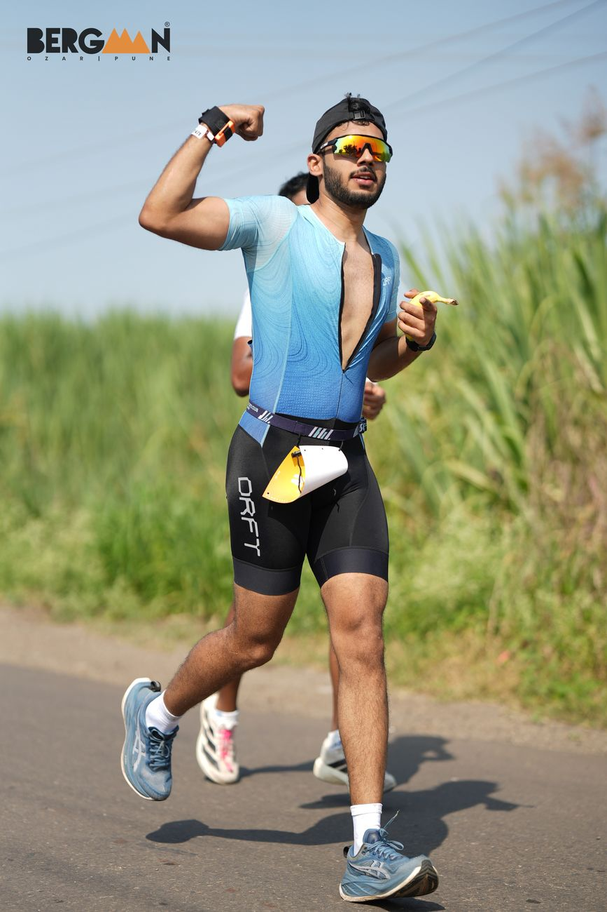
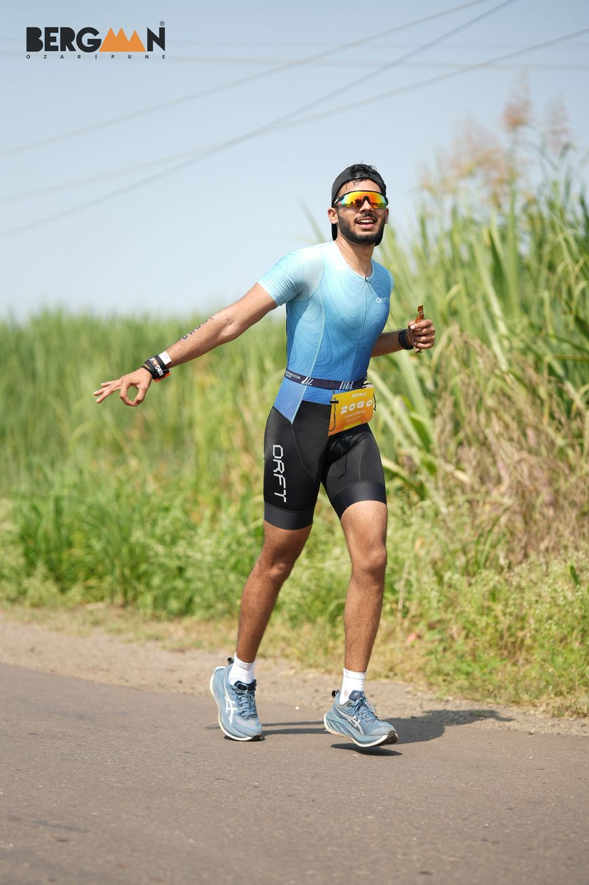
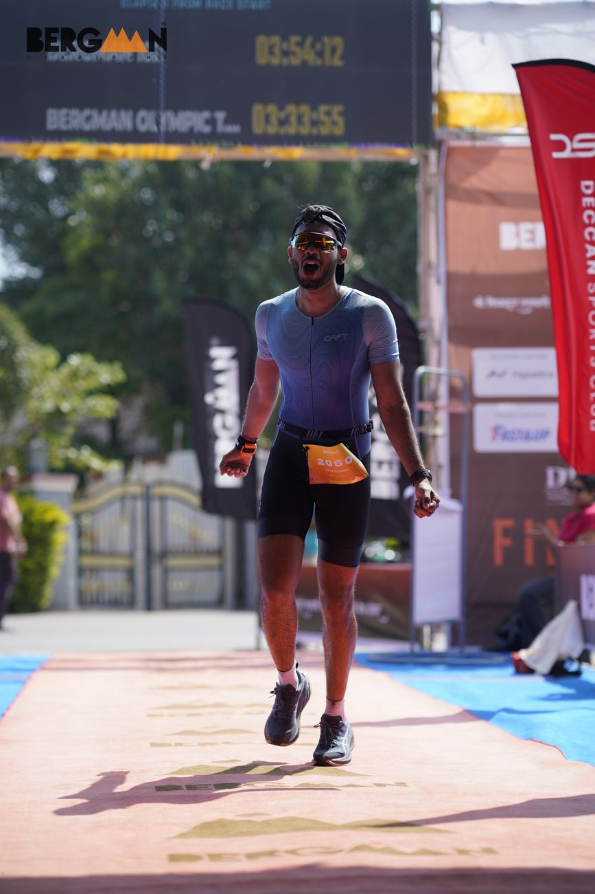
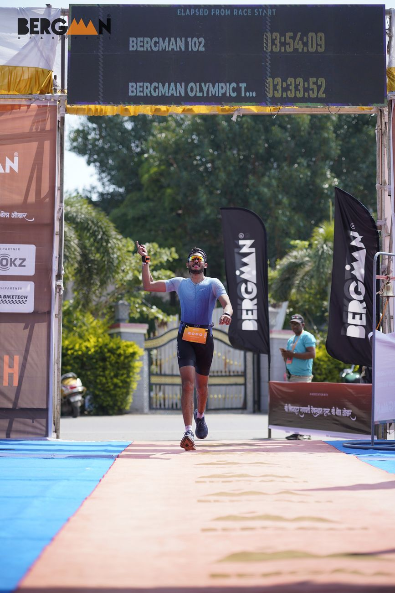
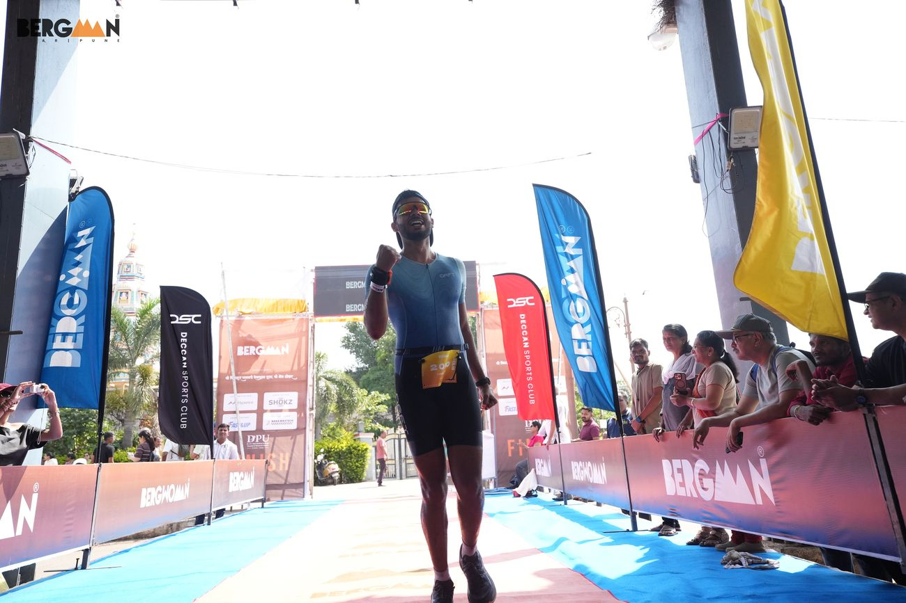
Race day data
a. Heart rate
Heart-rate chart and what it shows across the swim, bike and run.
b. Splits and result
Swim, T1, bike, T2, run and total time, plus overall and age-group position.
Logistics of a triathlon
a. Checklists and transition planning
The packing and transition checklists, and what worked.
b. Getting the bike and yourself there
How the bike and gear travelled to Ozar, where you stayed. The full kit list is on the Kit page.
c. Expenses
| What | Cost |
|---|---|
| Race entry | ₹ – |
| Travel | ₹ – |
| Stay and food | ₹ – |
| Total | ₹ – |
Race organisation feedback
Kudos!
What the organisers did well: handbook, bib collection, staff, volunteers, aid stations, post-race.
Could have been done better
What could improve: expectation setting, logistics, information for out-of-town athletes.
What's next
How the body and head feel after, what you learned, and the next race.